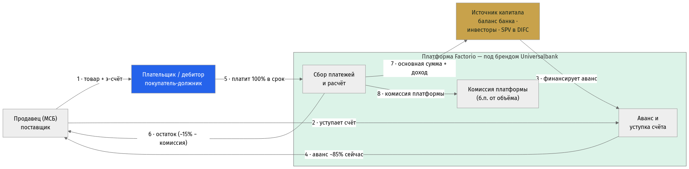
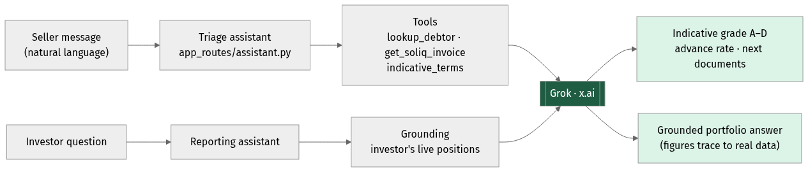
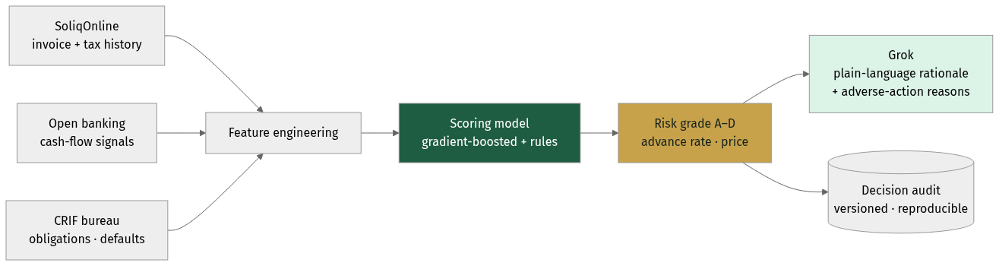
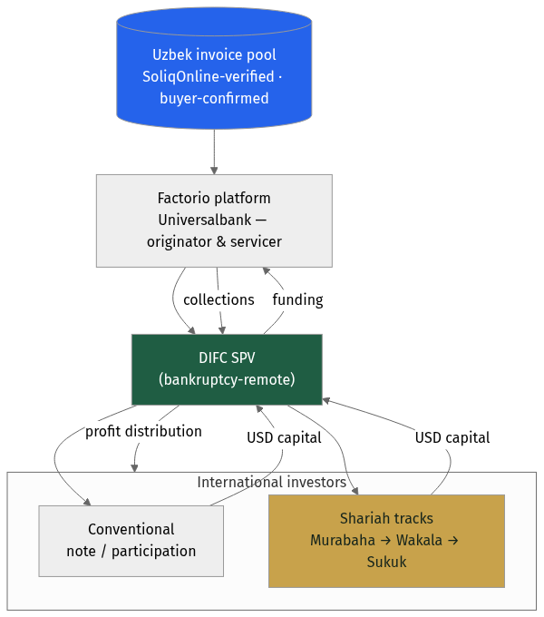
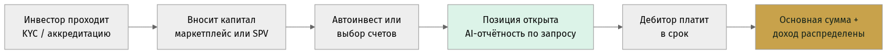
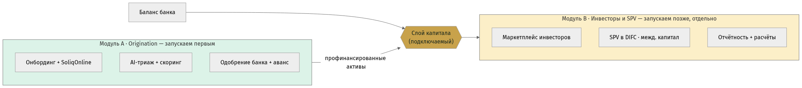
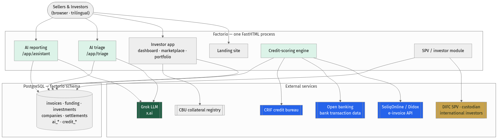
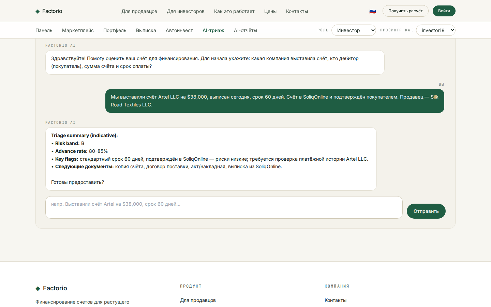
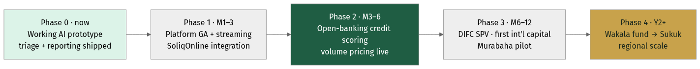

Factorio для Universalbank
Факторинг на базе ИИ · SPV для международных инвесторов · выход в ОАЭ
Подготовлено Consistente Ltd · Таллин · info@consistente.tech · consistente.tech
Предложение от Consistente Ltd построить и эксплуатировать для Universalbank платформу факторинга нового поколения (white-label) — эффективнее действующего решения, с оплатой только за объём, с ИИ-ядром, SPV для международных инвесторов и выходом в ОАЭ.
Краткое резюме
Три шага, одна платформа
- Разрыв. Каждый узбекский банк арендует факторинговый продукт у OzPlanet или FinMakon — включая Universalbank (соглашение с OzPlanet, сент. 2024). Никто не владеет продуктом, отношениями с клиентом и данными.
- 1 · Владеть платформой. White-label ИИ-платформа, которую Universalbank ведёт под своим брендом — банк владеет продуктом, клиентами и данными — с оплатой только за профинансированный объём.
- 2 · Международный капитал. Модуль SPV позволяет глобальным — и прежде всего инвесторам Залива — финансировать узбекскую дебиторку. OzPlanet и FinMakon не принимают иностранные или розничные деньги, поэтому это чистый, незанятый дифференциатор.
- 3 · Выход в ОАЭ. SPV в DIFC и поэтапная исламская программа (Мурабаха → Вакала → Сукук) для доступа к исламскому капиталу Дубая / DIFC.
- Декомпозируемо и уже работает. Сначала запускаем origination, слой инвесторов / SPV добавляем позже — а триаж заявок и отчётность в чате уже работают в приложении.
Возможность
Узбекистан построил идеальную инфраструктуру для факторинга
- SoliqOnline — платформа Государственного налогового комитета — с января 2020 года проверяет, фиксирует по времени и архивирует каждую B2B-электронную счёт-фактуру в стране.
- Didox подключает к ней 350 000+ организаций и интегрируется с 1С — готовая база поставщиков, уже обменивающихся счетами в электронном виде.
- Каждый счёт проверен государством и подтверждён покупателем в официальном реестре — мошенничество и подтверждение дебитора, самые сложные проблемы факторинга, решены у источника.
- Рынок быстро растёт: ЦБ сообщает о ~10,6 трлн сум (~$835 млн) факторинга за янв–сен 2025, около половины — цифровой, при адресном рынке ~$2 млрд с всё ещё низким проникновением.
Почему сейчас
Регуляторное окно открыто
- Указ Президента № 106 (авг. 2024) обязал банки предоставлять факторинг.
- ЗРУ-1058 (апр. 2025) внёс поправки в Гражданский кодекс, придав факторингу полную юридическую силу, и обязал автоматически регистрировать залоговый приоритет банка в реестре ЦБ РУз по API — примерно в течение часа после одобрения.
- Новая лицензия не требуется: действующая лицензия ЦБ у Universalbank это покрывает; Factorio работает как white-label-технология под эгидой банка.
- Ни один узбекский банк ещё не построил промышленный факторинговый стек на SoliqOnline с ИИ-ядром — первопроходец получает структурное преимущество.
Действующие игроки
OzPlanet и FinMakon владеют рынком — как агрегаторы
| Параметр |
OzPlanet |
FinMakon |
Factorio (Consistente) |
| Модель |
Агрегатор; ставки банка |
Агрегатор (при Didox) |
White-label маркетплейс — владеет банк |
| Доля в цифре (Q3 2025) |
56% цифрового объёма |
44% цифрового объёма |
Новичок — набирает долю |
| Источники капитала |
Только банки / МФО |
Банки / факторинг-компании |
Банки + инвесторы + розница + SPV |
| Иностр. / розн. капитал |
Нет |
Нет |
Да — SPV + маркетплейс |
| Банк владеет продуктом и данными |
Нет — владеет OzPlanet |
Нет — владеет FinMakon |
Да — полностью банка |
| ИИ-ядро |
Правила; зачаточно |
Зачаточно |
Grok: триаж + отчётность, обработка документов |
| Цена для банка |
Комиссия за транзакцию |
Комиссия за транзакцию |
Только б.п. от объёма (без SaaS) |
Universalbank уже подписал соглашение о сотрудничестве с OzPlanet (сент. 2024) — то есть знает модель. Смысл этого предложения — не арендовать более удобный агрегатор, а владеть продуктом полностью. (Данные рынка: ЦБ, Q3 2025.)
Стратегический разрыв
Ни один узбекский банк не владеет своим факторингом
- Сегодня банк, подключённый к OzPlanet или FinMakon, — это партнёр по финансированию на чужой платформе: агрегатор владеет брендом, отношениями с клиентом и данными.
- Это стратегическая зависимость: банк не может дифференцироваться, не может продавать по своим данным и не может сменить поставщика, не потеряв клиентов.
- Factorio это переворачивает. Universalbank ведёт платформу под своим брендом, владеет всеми клиентскими и транзакционными данными и может их выгрузить и перенести — без привязки к платформе.
- Та же гос. инфраструктура (SoliqOnline, реестр ЦБ), та же скорость — но банк владеет активом, а не арендует рельсы. Именно это владение и есть продукт.
Как это работает
Как движутся деньги — и кто получает оплату

Поток денег и платежей — продавец, плательщик (дебитор), платформа, капитал
- Плательщик (дебитор) — якорь: конкретное, подтверждённое покупателем обязательство в реестре SoliqOnline.
- Платформа выдаёт ~85% сразу из источника капитала (банк, инвестор или SPV); в срок плательщик гасит 100%, и водопад платит продавцу, капиталу и платформе.
- Поскольку поток одинаков независимо от источника финансирования, слой капитала подключаемый — сначала банк, инвесторы/SPV позже.
Направление 1 · Лучшая платформа
ИИ в основе, а не сбоку
- Тот же сквозной процесс факторинга — подача, проверка, финансирование, расчёт — но с ИИ в триаже, скоринге, документах и отчётности.
- На лёгком серверном стеке (FastHTML + PostgreSQL) — быстро менять, дёшево эксплуатировать, легко брендировать под банк.
- Трёхъязычность заложена в дизайн (английский · узбекский · русский); ИИ отвечает на языке пользователя.
- Следующие три слайда раскрывают ИИ, движок кредитного скоринга и коммерческую модель.
Путь · Заёмщик (origination)
Путь продавца — от регистрации до денег за 24–48 ч
Origination: импорт из SoliqOnline → AI-триаж → одобрение в один клик → аванс
- Ручное участие банка — один клик одобрения на заранее заполненном экране; всё остальное автоматизировано.
- Счёт импортируется и проверяется из SoliqOnline; дебитор скорится; залог регистрируется в ЦБ менее чем за 60 минут.
- Это Модуль A — он самодостаточен и может быть запущен первым, полностью за счёт баланса банка.
Направление 1 · ИИ
Две разговорные поверхности, одно ядро Grok

Триаж заявок в чате и отчётность для инвесторов в чате
- Триаж превращает описание продавца на естественном языке в индикативный рейтинг, ставку аванса и список документов — за секунды.
- Отчётность отвечает на вопросы инвестора на основе его реальных позиций — без выдуманных цифр.
- Grok оценивает и объясняет; финальное решение всегда за человеком. Каждое решение ИИ логируется и проверяемо.
Направление 1 · Кредитный скоринг
Скоринг в духе open banking, узбекская версия

Слияние данных в стиле Plaid, адаптированное к инфраструктуре Узбекистана
- Модель Plaid — это подключи счёт, прочитай денежные потоки, прими решение. В Узбекистане богатейший источник — SoliqOnline (проверенные счета и налоговый оборот) плюс банковские транзакции и бюро CRIF.
- Модель выдаёт рейтинг, ставку аванса и цену; Grok формирует понятное обоснование и причины отказа.
- Каждое решение версионируется и воспроизводимо — ключевая методология Consistente и то, что запросит регулятор.
Экономика
Что банк зарабатывает на одном счёте
| Поток · счёт $10 000 · 85% · 60 дн · 5% |
Сумма |
Направление |
День |
| Аванс продавцу (85%) |
$8 500 |
Платформа → продавец |
День 1 |
| Плательщик (дебитор) платит полностью |
$10 000 |
Плательщик → сбор |
День 60 |
| Остаток продавцу |
$1 500 |
Платформа → продавец |
День 60 |
| Дисконтный доход (брутто) |
$500 |
Капитал удерживает |
День 60 |
| Комиссия платформы (за объём) |
≈ $13 |
Банк → Consistente |
День 60 |
| Чистый доход по счёту |
≈ $487 |
Капитал удерживает |
День 60 |
| Годовая доходность на капитал |
≈ 30% год. |
— |
— |
Иллюстративно, по стандартной структуре с проверкой SoliqOnline. ~30% годовых на размещённый капитал против 22–28% по необеспеченному кредитованию МСБ — при меньшем риске: счёт проверен государством, плательщик подтвердил обязательство, банк держит зарегистрированный приоритет в ЦБ. Банк прибылен вплоть до ~4% дефолтов.
Направление 1 · Коммерческая модель
Оплата только за объём — интересы совпадают с банком
| Месячный объём финансирования |
Комиссия платформы (б.п. от объёма) |
| До 50 млрд сум |
120 б.п. |
| 50–200 млрд сум |
90 б.п. |
| 200–500 млрд сум |
70 б.п. |
| Свыше 500 млрд сум |
55 б.п. |
Иллюстративно. Без SaaS-лицензии, без оплаты за место, без платы за внедрение — Consistente получает вознаграждение только когда банк финансирует счёт. Опции на столе: альтернатива с revenue-share (небольшой % дисконтного дохода банка вместо б.п.), 12-месячная эксклюзивность для банка в Узбекистане и отложенный опцион на долю в Год 3 в виде новых акций (без размытия, без прав в совете/вето). Модуль международного SPV: ~60 б.п. в год от инвестированных активов + доля от результата сверх порога. Итоговые цифры — по согласованию с Universalbank.
Направление 2 · Международный капитал
SPV, открывающее узбекскую дебиторку миру

Пул счетов → Factorio → SPV в DIFC → международные инвесторы
- Universalbank остаётся оригинатором и сервисером; защищённое от банкротства SPV держит инвесторскую долю и направляет иностранный капитал в пул счетов.
- Два трека на одной базе активов: конвенциональная нота/участие для институционалов и исламские структуры для капитала Залива.
- Инвесторы получают ту же обоснованную ИИ-отчётность — на своём языке — плюс выписки и прозрачный аудиторский след.
Путь · Инвестор
Путь инвестора — от онбординга до распределения

Инвестор: онбординг → капитал → удержание с AI-отчётностью → выплата
- Розничные, институциональные и инвесторы Залива проходят онбординг один раз (KYC / аккредитация), затем финансируют через маркетплейс или SPV.
- Они держат позиции с AI-отчётностью по запросу; в срок основная сумма и доход распределяются автоматически.
- Это Модуль B — он подключается к тому же движку origination позже, ничего не меняя для продавца или банка.
Реализация · Декомпозируемость
Два модуля — берите один или оба, последовательно

Origination (Модуль A) и Инвесторы/SPV (Модуль B) внедряются независимо
- Модуль A — Origination может стать всей первой фазой Universalbank: факторинг за счёт банка, запуск за недели, немедленное выполнение требований Указа № 106.
- Модуль B — Инвесторы и SPV добавляет маркетплейс и капитал DIFC/международный позже, поверх того же движка, без переделок.
- Слой капитала — это стык: меняйте или добавляйте источники финансирования, не трогая origination — снижая риск программы и инвестиций.
Направление 3 · Выход в ОАЭ
Поэтапная исламская программа для капитала DIFC
| Критерий |
Мурабаха (SCF) |
Фонд Вакала |
Сукук |
Мушарака |
| Шариатская чистота |
Высокая |
Высокая |
Высокая |
Наивысшая |
| Сложность |
Низкая |
Низк.–ср. |
Высокая |
Средняя |
| Срок вывода |
Самый быстрый |
Быстро |
Дольше всех |
Средне |
| Привлекательность (Дубай) |
Средняя |
Высокая |
Очень высокая |
Высокая |
| Капитал на сделку |
Мал.–ср. |
Средний |
Крупный |
Ср.–крупн. |
| Регуляторика |
Только фатва |
Фатва + фонд |
Фатва + DFSA |
Фатва + фонд |
| Кому подходит |
Пилот |
Family office |
Институционалы |
Стратег. партнёры |
Рекомендуемый путь: последовательно — пилот Мурабаха (M6–12) → фонд Вакала → Сукук. Каждый этап формирует историю, делающую следующий убедительным. Все требуют фатвы аккредитованного AAOIFI совета до запуска.
Направление 3 · Почему Дубай / DIFC
Главное — спред доходности
- Доходность узбекского факторинга ~20–30% годовых против исламского денежного рынка Залива ~4–6% — исключительный спред для такого риска благодаря структурной защите SoliqOnline.
- Короткая дюрация (оборот 30–90 дней) редка и очень востребована у ликвидити-менеджеров Залива.
- Узбекская дебиторка не коррелирует с недвижимостью Залива, региональными акциями или нефтью — настоящая диверсификация.
- DIFC (DFSA) и ADGM (FSRA) имеют зрелые рамки исламских финансов и признают структуры SPV/Сукук; Федеральный декрет-закон № 50 от 2022 кодифицирует контракты.
Архитектура
Один процесс, ИИ-нативный, готовый к интеграциям

Целевая архитектура системы с выделенными ИИ-компонентами
- Единый процесс FastHTML обслуживает лендинг, приложение инвестора и ИИ-ассистентов; PostgreSQL хранит данные факторинга и ИИ.
- Чистые точки интеграции с SoliqOnline/Didox, open banking, CRIF, реестром ЦБ и SPV/кастодианом в DIFC.
- Grok (x.ai) подключается через OpenAI-совместимый интерфейс — id модели задаётся конфигурацией, что исключает привязку к вендору.
Доказательство · Работает уже сегодня
ИИ — не слайд, он уже внедрён

Действующий триаж счёта в чате в приложении Factorio
- Продавец описывает счёт одним предложением; ассистент возвращает индикативный рейтинг, ставку аванса и список документов.
- На базе Grok (x.ai), трёхъязычно, с корректным запасным поведением и полным аудитом — тот же подход расширяется на скоринг и отчётность.
Реализация
От прототипа к региональной платформе

Поэтапный запуск — каждый этап финансирует следующий
- Этап 0 (сейчас): прототип ИИ-триажа и отчётности работает.
- Этапы 1–2 (M1–6): релиз платформы, интеграция SoliqOnline, скоринг на open banking, оплата за объём.
- Этапы 3–4 (M6+): SPV в DIFC и первый международный капитал, затем последовательность Вакала → Сукук и региональный масштаб.
Почему Consistente
Промышленный ИИ, поставляемый стабильно
- Consistente Ltd (Таллин, ЕС) создаёт промышленный ИИ для предприятий — с воспроизводимыми пайплайнами, версионируемыми моделями и прозрачными промптами, а не «чёрные ящики».
- Опыт в финансовых услугах и регулируемых секторах: LSEG, DBRS Morningstar, ARM, Microsoft.
- Ключевые компетенции прямо ложатся на проект: интеллектуальная обработка документов, прикладной прогноз/скоринг и агентные процессы с проверкой человеком.
- Базируется в ЕС, приоритет аудируемости — верный профиль для банка, строящего ИИ под надзором регулятора.
Следующие шаги
Что предлагаем сделать первым
- 1. Согласовать объём white-label и коммерческие условия на основе объёма.
- 2. Запустить пилот на реальных данных SoliqOnline; вывести платформу в релиз с ИИ-триажем и движком скоринга.
- 3. Параллельно начать подготовку SPV в DIFC и фатвы, чтобы международный капитал последовал за операционным портфелем.
- Контакт: Consistente Ltd · info@consistente.tech · consistente.tech